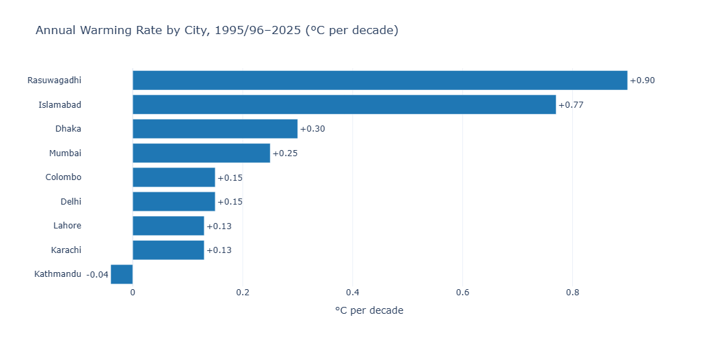

Every ranking below is built from the same 30-year ERA5/ERA5-Land reanalysis methodology used throughout this site — no new modeling, just placing all 9 already-published locations side by side. Full seasonal breakdowns, extreme heat data, and rainfall trends for each are linked throughout; this piece is the index, not a replacement for the individual reports.

The Full Ranking
Rasuwagadhi, Nepal
+0.90°C / decadeA Himalayan border crossing at ~1,880m elevation, and by far the fastest-warming location in this series. Its winter season alone warms at roughly +1.67°C/decade — the fastest of any season measured anywhere in this dataset. Paired with a steep rainfall decline (~−367mm/decade), it's the most extreme climate signal this site has documented.
Islamabad, Pakistan
+0.77°C / decadeThe fastest-warming lowland city in the series — roughly six times Karachi's or Lahore's rate. Like Rasuwagadhi, its steepest warming shows up in winter, an unusual pattern most other cities in this series don't share, likely compounded by the capital's rapid recent urbanization.
Dhaka, Bangladesh
+0.30°C / decadeThe fastest-warming of the true lowland, low-elevation cities. Notably, Dhaka pairs this rapid warming with the steepest declining rainfall trend among cities in the series (~−140mm/decade) — hotter and drier at the same time.
Mumbai, India
+0.25°C / decadeA coastal city warming faster than either Pakistani lowland city despite ocean proximity — and unlike Dhaka, Mumbai is getting wetter as it warms, with the steepest rainfall increase in the series (~+300mm/decade).
Colombo, Sri Lanka
+0.15°C / decadeTied with Delhi for the middle of the pack. Colombo's own rainfall trend is far more dramatic than its temperature trend — one of the steepest precipitation increases in the series (~+170mm/decade) alongside comparatively modest warming.
Delhi, India
+0.15°C / decadeTied with Colombo on annual warming rate, but a very different heat story: Delhi's extreme heat day count is among the highest in the series (20–45+ days/year above 40°C), showing that a moderate annual trend can still coexist with severe seasonal extremes.
Karachi, Pakistan
+0.13°C / decadeTied with Lahore for the slowest warming among the lowland cities that are still trending positive. Karachi's rainfall story is more dramatic than its temperature story — a rising trend driven almost entirely by a handful of extreme monsoon years, especially 2022.
Lahore, Pakistan
+0.13°C / decadeTied with Karachi, and — despite the same modest annual rate — one of only two cities in this series (alongside Delhi) that regularly sees 20 or more extreme heat days a year, underlining again that annual averages and extremes don't always move together.
Kathmandu, Nepal
−0.04°C / decadeThe clear outlier: the only location in this series with an essentially flat, marginally negative annual trend — a genuinely unusual signal given every other city, and even Kathmandu's own monsoon season specifically, shows warming. Valley topography and local effects are plausible contributors a single reanalysis grid cell can't fully resolve.
What Explains the Differences?
- Elevation looks like a real factor. The two fastest-warming locations, Rasuwagadhi and Islamabad, both sit at meaningfully higher elevation than the lowland cities in this series — consistent with broader research showing mountain environments warming faster than the lowlands beneath them.
- Coastal proximity moderates but doesn't guarantee slow warming. Karachi, Colombo, and Mumbai are all coastal, yet their warming rates span a wide range (0.13 to 0.25°C/decade) — ocean proximity tempers extremes more than it controls the overall trend.
- Winter is the season to watch in the fastest-warming locations. Both Rasuwagadhi and Islamabad show their steepest warming in winter specifically — a pattern most other cities in this series don't share, where monsoon or post-monsoon typically warms fastest instead.
- Annual rate and extreme-day frequency are different questions. Delhi and Lahore both sit in the middle of this ranking by annual rate, yet lead the series in extreme-heat-day counts — a reminder that "how fast is the average rising" and "how often does it get dangerously hot" don't always tell the same story.
Full Comparison Table
| Rank | City | Warming Rate (°C/decade) | Precip Trend (mm/decade) | Fastest Season |
|---|---|---|---|---|
| 1 | Rasuwagadhi | +0.90 | −367 | Winter |
| 2 | Islamabad | +0.77 | ~+60 | Winter |
| 3 | Dhaka | +0.30 | ~−140 | Monsoon |
| 4 | Mumbai | +0.25 | ~+300 | Pre-Monsoon |
| 5 | Colombo | +0.15 | ~+170 | Monsoon |
| 5 | Delhi | +0.15 | ~+35 | Post-Monsoon |
| 7 | Karachi | +0.13 | +88.7 | Monsoon |
| 7 | Lahore | +0.13 | ~+10 | Monsoon |
| 9 | Kathmandu | −0.04 | ~+50 | Monsoon |
For the narrative version of this same comparison, see the South Asia climate trend report. For how this year's actual monsoon is tracking against these baselines, see our 2026 monsoon update.
See the complete year-by-year trend behind every ranking above.
Open the Interactive Dashboard →Data Source & Methodology
All figures are derived from the Open-Meteo Historical Weather API, built on ERA5 and ERA5-Land reanalysis data produced by the European Centre for Medium-Range Weather Forecasts (ECMWF) through the Copernicus Climate Change Service, covering 1995/96 through 2025 (Rasuwagadhi's underlying dataset spans a longer window; figures here use the same 1995–2025 comparison period as the rest of this series). Warming rates are estimated by reading the linear regression trend line plotted on each location's annual mean temperature chart. Rasuwagadhi, at ~1,880m elevation in complex Himalayan terrain, carries a wider-than-usual margin of uncertainty given ERA5-Land's ~9km grid resolution — see its full report for details.
Frequently Asked Questions
Which South Asian city is warming fastest?
Rasuwagadhi, Nepal — a high-altitude Himalayan border location — shows the fastest annual warming rate in this series at approximately +0.90°C per decade. Among lowland cities, Islamabad is fastest at approximately +0.77°C per decade.
Which South Asian city is warming slowest?
Kathmandu shows the slowest, and only negative, annual trend in this series at approximately −0.04°C per decade — essentially flat to marginally cooling over the 1995–2025 record.
Why is Islamabad warming faster than other Pakistani cities?
Islamabad's warming rate (~+0.77°C/decade) is roughly six times Karachi's or Lahore's (~0.13°C/decade each), likely reflecting a combination of regional climate change and the city's rapid, relatively recent urbanization, concentrated especially in its winter season.
Do coastal cities warm slower than inland cities in South Asia?
Generally yes, though with exceptions. Coastal cities like Karachi, Colombo, and Mumbai show more moderate temperature swings than inland cities, but Mumbai's overall warming rate (~+0.25°C/decade) is still faster than Karachi's or Lahore's, showing coastal exposure doesn't guarantee slow warming on its own.
Is elevation linked to faster warming in this data?
It appears to be a strong factor. The two fastest-warming locations in this series — Rasuwagadhi (~1,880m) and, to a lesser extent, Islamabad — both sit at higher elevation than the lowland cities in the dataset, consistent with broader research showing mountain environments warming faster than the lowlands below them.
Explore every full report: Rasuwagadhi · Islamabad · Dhaka · Mumbai · Colombo · Delhi · Karachi · Lahore · Kathmandu